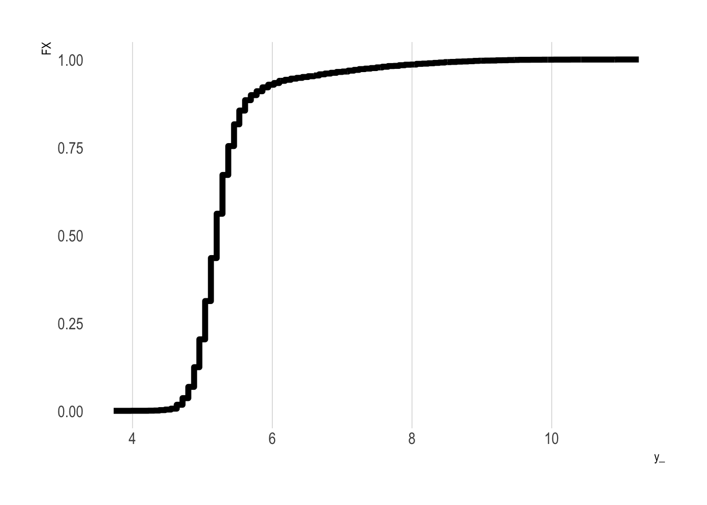
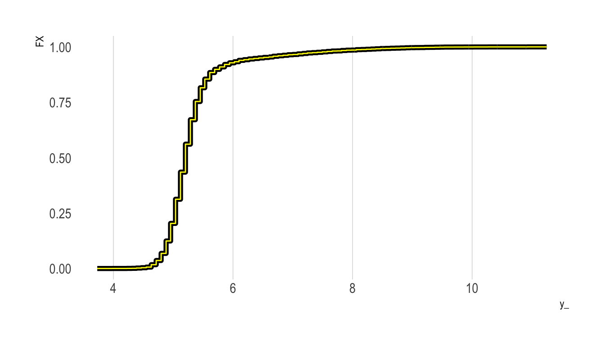
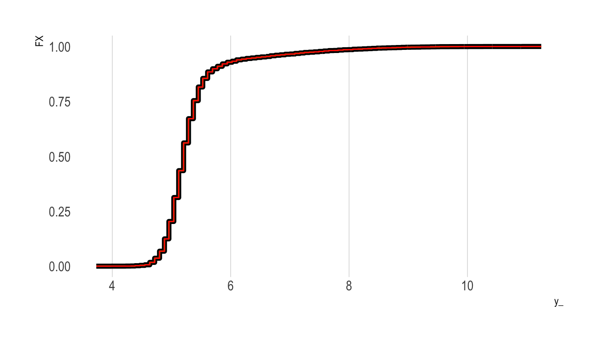
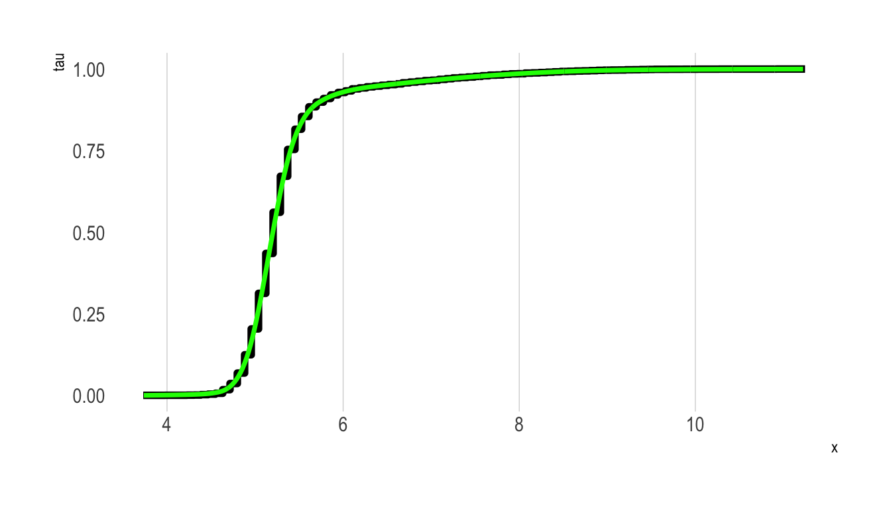
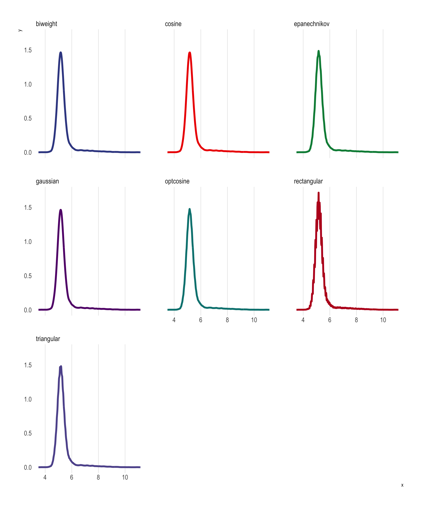
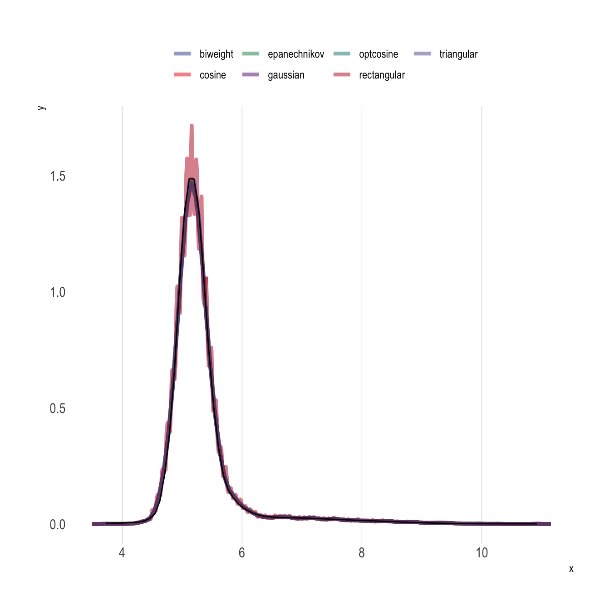
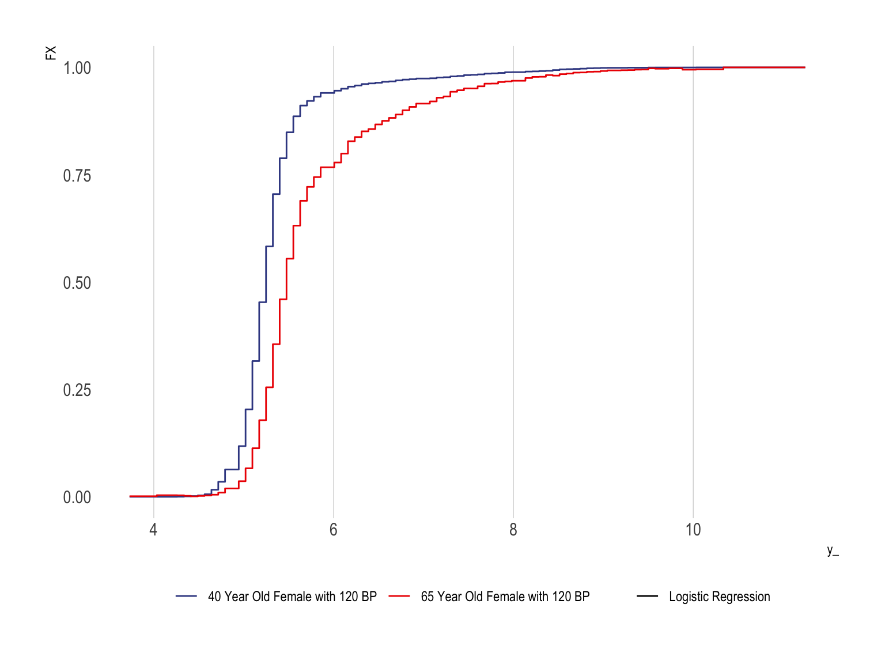
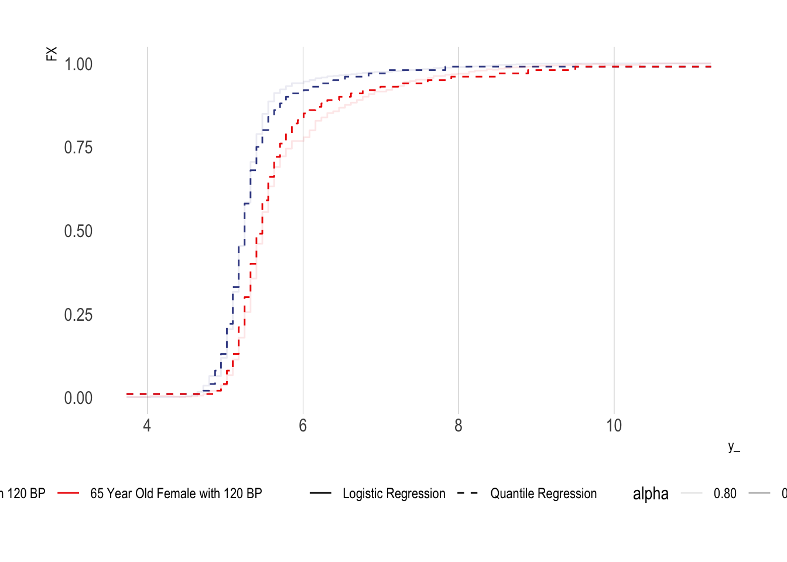
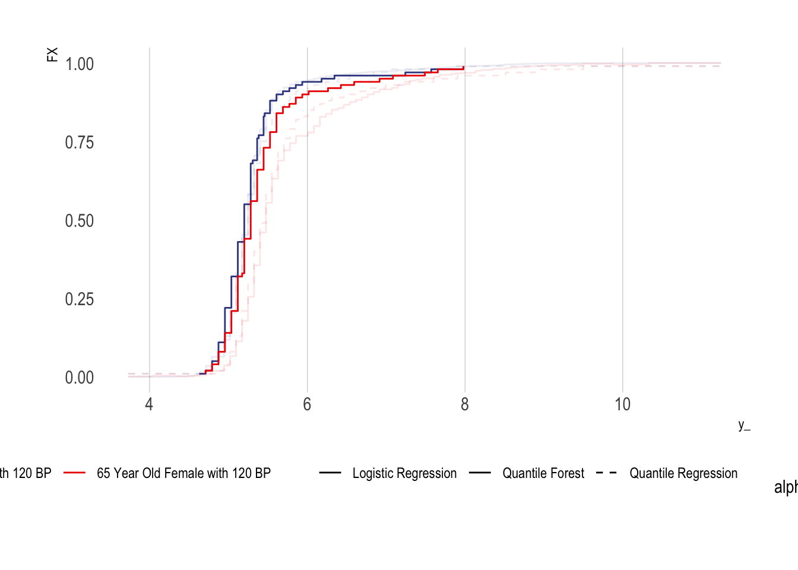

library(tidyverse)
library(qte)
library(here)
library(glue)
library(conflicted)
library(hrbrthemes)
library(broom)
library(edfun)
library(scam)
library(quantregForest)
conflict_prefer("filter","dplyr")
select <- dplyr::select
options("scipen" = 100, "digits" = 5)
ggplot2::theme_set(hrbrthemes::theme_ipsum(grid = "X"))
df <- haven::read_dta(here("_ignore/CS9-Oregon-Insurance-Experiment-RCT-IV-Data.dta")) %>%
mutate(D = treatment) %>%
mutate(Y = a1c_inp) %>%
select(Y,D,nnnnumhh_li_2 ,nnnnumhh_li_3 ,age_inp, bp_sar_inp, female, starts_with("age_decile_dum"),weight_total_inp) %>%
na.omit()Estimating Distribution Functions
Introduction
This posting runs through various approaches for estimating distribution functions, and functions of distribution functions such as expected values.
Let’s start with some definitions. First, define random variable \(X\). The cumulative distribution function (CDF) of \(X\) is the probability that \(X\) takes on some value less than \(x\):
\[ \begin{eqnarray} F_X(s) = P(X \leq x) \end{eqnarray} \tag{1}\]
The probability density function (PDF) tells us about the relative likelihood that \(X\) takes on any given value, and can be defined as the derivative of the CDF:
\[ f_X(x) = \frac{dF_X(x)}{dx} \tag{2}\]
Working in the opposite direction, we can also define the CDF by integrating the PDF:
\[ F_X(x)=\int_{-\infty}^x f_X(t) d t \tag{3}\]
This relationship is helpful because it allows us to define the expected value of \(X\) as a weighted sum of values \(x\), with weights defined by the PDF. In integral notation:
\[ \mathrm{E_X}[X]=\int_{-\infty}^{\infty} x f_X(x) dx \tag{4}\]
Description of Data
Our example data will be taken from the Oregon Health Insurance Experiment (OHIE). We’ll focus on the experimental or “reduced form” aspect of the OHIE by comparing individuals randomized to Medicaid eligibility to those randomized to control. Our primary outcome of interest will be hemoglobin A1C levels.
Estimating CDFs
R provides functionality for estimating empirical CDFs directly (using hte command ecdf()). However, it is useful to understand how this function works, because this basic intuition will carry through other approaches to estimating CDFs and conditional CDFs below.
Essentially, to construct an empirical CDF for a given variable \(X\), we define various values \(t\) by traversing over the “support” or range of \(X\) and create a series of binary indicators for whether the value of \(X\) is less than or equal to \(t\). Typically, these \(t\) values are defined by splitting up the support of \(X\) into evenly spaced values.
More formally,
\[
F_n(t)=\#\left\{x_i \leq t\right\} / n=\frac{1}{n} \sum_{i=1}^n \mathbf{1}_{\left[x_i \leq t\right]} .
\] With these values in hand, we can construct a plot of \(t\) (x-axis) and the CDF values (y-axis). In R we obtain these CDF values using ecdf():
Show the code
FX0 <-
df %>%
filter(D == 0) %>%
pull(Y) %>%
ecdf(.)
y_ <- # Get 1,000 evenly spaced points along the support of the outcome (re75)
seq(range(df$Y)[1],range(df$Y)[2],length.out=1000)
p0 <-
tibble(y_ = y_, FX = FX0(y_)) %>%
ggplot() +
geom_step(aes(x = y_, y = FX),lwd=2)
p0
Do It “By Hand” Using Regression
In the example below, we’ll construct a CDF “by hand” by defining our various values of \(t\) (which we’ll call y_), and then looping over them. Within each loop, we first define a binary outcome, with values of one if the value of \(Y\) is less than or equal to the given y_ value under consideration, and zero otherwise. We next regress this binary outcome on an intercept only; the resulting coefficient on the intercept term provides an estimate of the fraction of the sample with a \(Y\) value less than or equal to the y_ value.
We repeat this for all y_ values and plot the result as a yellow line on top of the previous plot:
Show the code
taus <- c(1:99)/100
y0 <- # Vector of untreated outcomes
df %>% filter(D==0) %>% pull(Y)
eCDF_y0 <-
y_ %>% # Iterate over the support of y
map_dbl(~({
IY = as.integer(y0 <= .x)
fIY = lm(IY~1)
out <-
tidy(fIY) %>% pull(estimate)
return(out)
}))
p0 +
geom_step(
data = tibble(x = y_, y = eCDF_y0, method = "Constructed") ,
aes(x = x, y = y), colour = "yellow")
As the figure shows, we have successfully replicated the empirical CDF plot produced by ecdf().
Do It “By Hand” Using Logistic Regression
We’ll next repeat the above exercise, but only change the regression type. That is, rather than fit a linear probability model using lm(), we’ll fit a logistic regression model. We then need to predict the outcome response to obtain an estimate of the fraction of the sample with value less than or equal to the given y_ value (this is analogous to obtaining the coefficient on the intercept term in the linear probability model approach above).
Our new eCDF values are plotted in red below. As the plot shows, we obtain essentially the same eCDF curve:
Show the code
taus <- c(1:99)/100
y0 <- # Vector of untreated outcomes
df %>% filter(D==0) %>% pull(Y)
eCDF_y0_logit <-
y_ %>% # Iterate over the support of y
map_dbl(~({
IY = as.integer(y0 <= .x)
fIY = glm(IY~1, family = "binomial")
out <- predict(fIY , type="response", newdata = data.frame(model.matrix(IY~1)[1,]))
return(out)
}))
p0 +
geom_step(
data = tibble(x = y_, y = eCDF_y0, method = "LPM") ,
aes(x = x, y = y), colour = "yellow") +
geom_step(
data = tibble(x = y_, y = eCDF_y0, method = "logit") ,
aes(x = x, y = y), colour = "red")
Create A “Smoothed” Version Using a Shape-Constrained Generalized Additive Model
Recall from above that to calculate the PDF of \(X\) we can differentiate the CDF (Equation 2). However, the eCDFs calculated above are “chunky”—they are essentially step functions that move at discrete values defined over the support of the outcome.
Depending on the application we may want to fit a smoothed function to these step function values. While R provides functionality to fit a smoothed curve to a given set of points (approxfun()), the resulting approximation function will likely not play by the rules of a CDF (e.g., minimum value 0, maximum value 1, monotonically increasing throughout, etc.).
To fit this approximation function we can fit a shape constrained additive model that imposes these constraints. In the plot below, this new smoothed eCDF curve is plotted in green over the step function plotted above.
Show the code
df_ <-
tibble(x = y_, tau = ecdf(y0)(y_))
n.knots = 40
n <- nrow(df_)
fit <-
scam::scam(tau ~ s(x, bs = "mpi", k = n.knots),
data = df_,
weights = c(n, rep(1, n - 2), 10 * n))
# Interior Knots
xk <- with(fit$smooth[[1]], knots[4:(length(knots) - 3)])
# Spline values at interior knots
yk <- predict(fit, newdata = data.frame(x = xk))
# Reparametrization into a monotone interpolation spline
xg <- seq(min(df_$x), max(df_$x), length = 100)
f0 <- stats::splinefun(xk, yk, "hyman")
df_$cdf_sm = f0(y_)
df_ %>%
ggplot() + geom_step(aes(x = x, y = tau), lwd=2) +
geom_line(aes(x = x, y = cdf_sm), col = "green", lwd=1.25) +
scale_y_continuous(limits = c(0,1))
Estimating PDFs
Before discussing how to calculate conditional CDFs let’s first cover the basics of estimating and plotting PDFs. Again, R has excellent internal functions to do this. This function (density()) uses kernel density estimates of the PDF, with several options for the kernel density method used:
| Option |
|---|
| gaussian |
| epanechnikov |
| rectangular |
| triangular |
| biweight |
| cosine |
| optcosine |
Let’s use each to construct a PDF for \(Y\).
Show the code
df_pdfs <-
c("gaussian", "epanechnikov", "rectangular",
"triangular", "biweight",
"cosine", "optcosine") %>%
map_df(~({
dens_ <- density(y0, kernel = .x, adjust =2)
tibble(x = dens_$x, y = dens_$y, method = .x)
}))
p_PDF <-
df_pdfs %>%
ggplot(aes(x = x, y = y, colour = method)) + geom_line(lwd=1.5) +
theme(legend.position = "none") +
ggsci::scale_colour_aaas(name="") +
facet_wrap(~method)
p_PDF
Do it “By Hand”
We can also leverage Equation 2 and the shape-constrained GAM model fit to construct an estimate of the CDF above to construct the PDF by hand. In the code below, f0() is the constructed CDF function, and we can simply add the option ,1 to obtain the first derivative (i.e., f0(y0) provides CDF values and f0(y0,1) provides PDF values).
Show the code
# Note: f() is constructed above
dens_y0 <- approxfun(y0,f0(y0,1))
df_pdfs %>%
ggplot(aes(x = x, y = y, colour = method)) + geom_line(lwd = 1.5,alpha=0.5) +
theme(legend.position = "top") +
ggsci::scale_colour_aaas(name = "") +
geom_line(
data = tibble(y = y0,
pdf = dens_y0(y0)),
aes(x = y, y = pdf) ,
colour = "black",
lwd = 0.5
) 
Average Treatment Effect
We can now use Equation 4 to calculate the an estimate of the expected value of \(Y_0\):
First let’s check the mean the usual way:
mean(y0)[1] 5.3303We can now find 1,000 points along the support of \(Y\) and numerically integrate over the distribution of \(Y_0\):
y_ <- # Get 1,000 evenly spaced points along the support of the outcome (re75)
seq(range(df$Y)[1],range(df$Y)[2],length.out=1000)
hatY0 <-
sum(y_*f0(y_,1)/sum(f0(y_,1)))
hatY0[1] 5.3302We can now construct a similar smoothed CDF/PDF for the treated group and take the difference to estimate the ATT:
Show the code
y1 <- # Vector of untreated outcomes
df %>% filter(D==1) %>% pull(Y)
df_ <-
tibble(x = y_, tau = ecdf(y1)(y_))
n.knots = 40
n <- nrow(df_)
fit <-
scam::scam(tau ~ s(x, bs = "mpi", k = n.knots),
data = df_,
weights = c(n, rep(1, n - 2), 10 * n))
# Interior Knots
xk <- with(fit$smooth[[1]], knots[4:(length(knots) - 3)])
# Spline values at interior knots
yk <- predict(fit, newdata = data.frame(x = xk))
# Reparametrization into a monotone interpolation spline
xg <- seq(min(df_$x), max(df_$x), length = 100)
f1 <- stats::splinefun(xk, yk, "hyman")hatY0 <-
sum(y_*f0(y_,1)/sum(f0(y_,1)))
hatY1 <-
sum(y_*f1(y_,1)/sum(f1(y_,1)))
att <- hatY1 - hatY0
att[1] 0.0066533Conditional CDFs and PDFs
Conditional CDFs Using Logistic Regression
Show the code
taus <- c(1:99)/100
y_ <- # Get 100 evenly spaced points along the support of the outcome (re75)
seq(range(df$Y)[1],range(df$Y)[2],length.out=100)
y0 <- # Vector of untreated outcomes
df %>% filter(D==0) %>% pull(Y)
covars <- c("age_inp", "bp_sar_inp", "female")
fmla <- as.formula("IY ~ age_inp + bp_sar_inp + female")
X_ <- df %>%
filter(D==0) %>%
select(all_of(covars)) %>%
as.matrix()
logit_fit <- y_ %>% # Iterate over the support of y
map( ~ ({
IY = as.integer(y0 <= .x)
dat = model.frame(fmla, data = cbind.data.frame(IY, X_)) %>% data.frame()
fit = glm(fmla, family = "binomial", data = dat) %>% coef()
}))
df_ex1 <- data.frame(IY = 1, age_inp = 40, bp_sar_inp = 120, female = 1)
df_ex2 <- data.frame(IY = 1, age_inp = 65, bp_sar_inp = 120, female = 1)
F0ex1 <-
logit_fit %>%
map_dbl(~({
boot::inv.logit(model.matrix(fmla,data=df_ex1) %*% .x)
}))
F0ex2 <-
logit_fit %>%
map_dbl( ~ ({
boot::inv.logit(model.matrix(fmla, data = df_ex2) %*% .x)
}))
tibble(y_ = y_, FX = F0ex1, method = "Logistic Regression", sample = "40 Year Old Female with 120 BP") %>%
bind_rows({
tibble(y_ = y_, FX = F0ex2, method = "Logistic Regression", sample = "65 Year Old Female with 120 BP")
}) %>%
ggplot(aes(x = y_, y = FX, colour = sample, group = sample, lty= method)) + geom_step() +
ggsci::scale_colour_aaas(name = "") +
scale_linetype_manual(name = "", values = c(1))+
theme(legend.position = "bottom")
Conditional CDFs Using Quantile Regression
An alternative method is to use quantile regression
Show the code
quantreg_fit0 <-
quantreg::rq(Y ~ age_inp + bp_sar_inp + female, tau = taus, data = df %>% filter(D==0))
df_ex1 <- data.frame(Y = 1, age_inp = 40, bp_sar_inp = 120, female = 1)
df_ex2 <- data.frame(Y = 1, age_inp = 65, bp_sar_inp = 120, female = 1)
F0ex1QR <-
predict(quantreg_fit0, type = "Fhat", newdata = df_ex1, stepfun = TRUE)
F0ex2QR <-
predict(quantreg_fit0, type = "Fhat", newdata = df_ex2, stepfun = TRUE)
tibble(y_ = y_, FX = F0ex1, method = "Logistic Regression", sample = "40 Year Old Female with 120 BP") %>%
bind_rows({
tibble(y_ = y_, FX = F0ex2, method = "Logistic Regression", sample = "65 Year Old Female with 120 BP")
}) %>%
bind_rows({
tibble(y_ = y_, FX = F0ex1QR(y_), method = "Quantile Regression", sample = "40 Year Old Female with 120 BP")
}) %>%
bind_rows({
tibble(y_ = y_, FX = F0ex2QR(y_), method = "Quantile Regression", sample = "65 Year Old Female with 120 BP")
}) %>%
mutate(alpha = ifelse(method=="Quantile Regression",1,0.8)) %>%
ggplot(aes(x = y_, y = FX, colour = sample, lty= method)) + geom_step(aes(alpha = alpha)) +
ggsci::scale_colour_aaas(name = "") +
scale_linetype_manual(name = "", values = c(1,2)) +
theme(legend.position = "bottom")
Conditional CDFs Using Quantile Regression Forests
Show the code
df0 <- df %>% filter(D==0) %>% as.matrix()
indextrain <- sample(1:nrow(df0),round(0.6*nrow(df0)),replace=FALSE)
Xtrain <- df0[indextrain,covars]
Xtest <- df0[-indextrain,covars]
Ytrain <- df0[ indextrain,"Y"]
Ytest <- df0[-indextrain,"Y"]
qrf <- quantregForest::quantregForest(x = Xtrain, y = Ytrain, nodesize = 10, sampsize=30)
df_ex <- df_ex2 <- df0[1:2,c("Y",covars)] %>% as.data.frame()
df_ex$age_inp = c(40,65)
df_ex$bp_sar_inp = c(120,120)
df_ex$female = c(1,1)
conditionalQuantiles <- predict(qrf, df_ex, what = taus)
tibble(y_ = y_, FX = F0ex1, method = "Logistic Regression", sample = "40 Year Old Female with 120 BP") %>%
bind_rows({
tibble(y_ = y_, FX = F0ex2, method = "Logistic Regression", sample = "65 Year Old Female with 120 BP")
}) %>%
bind_rows({
tibble(y_ = y_, FX = F0ex1QR(y_), method = "Quantile Regression", sample = "40 Year Old Female with 120 BP")
}) %>%
bind_rows({
tibble(y_ = y_, FX = F0ex2QR(y_), method = "Quantile Regression", sample = "65 Year Old Female with 120 BP")
}) %>%
bind_rows({
t(conditionalQuantiles) %>%
data.frame() %>%
as_tibble() %>%
set_names(c("40 Year Old Female with 120 BP", "65 Year Old Female with 120 BP")) %>%
mutate(FX = taus) %>%
gather(sample, y_, -FX) %>%
mutate(method = "Quantile Forest")
}) %>%
mutate(alpha = ifelse(method=="Quantile Forest",1,0.75)) %>%
ggplot(aes(x = y_, y = FX, colour = sample, lty= method)) + geom_step(aes(alpha = alpha)) +
ggsci::scale_colour_aaas(name = "") +
scale_linetype_manual(name = "", values = c(1,1,2)) +
theme(legend.position = "bottom")